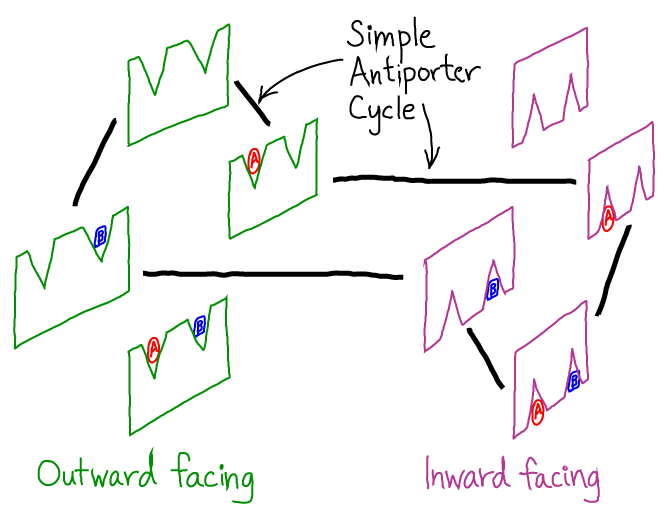

$
\newcommand{\conc}[1]{[\mathrm{#1}]}
\newcommand{\conceq}[1]{[\mathrm{#1}]^{\mathrm{eq}}}
\newcommand{\kcat}{k_{\mathrm{cat}}}
\newcommand{\kdt}{k_{\mathrm{dt}}}
\newcommand{\kdtsol}{k^{\mathrm{sol}}_{\mathrm{dt}}}
\newcommand{\kkeq}{K^{\mathrm{eq}}}
\newcommand{\kmmon}{\kon^{\mathrm{ES}}}
\newcommand{\kmmoff}{\koff^{\mathrm{ES}}}
\newcommand{\kconf}{k_{\mathrm{conf}}}
\newcommand{\koff}{k_{\mathrm{off}}}
\newcommand{\kon}{k_{\mathrm{on}}}
\newcommand{\ktd}{k_{\mathrm{td}}}
\newcommand{\ktdsol}{k^{\mathrm{sol}}_{\mathrm{td}}}
\newcommand{\ss}{\mathrm{SS}}
$
Advanced Cycle Logic
Cycles are essential to biochemistry and cell biology for the simple reason that the cell re-uses molecular components like enzymes.
The basic "logic" of cycles has been described.
Here, we want to build on the example of the antiporter/exchanger to understand the "space" of states in which machine cycles tend to exist and also how those states are "wired" together.
Seeing the antiporter in an extended space
Compare the original antiporter cycle to the equivalent representation below.
Here, the binding events are "implicit" - if a new molecule appears along a given line (process) then a binding event must occur.

We have categorized the states as inward and outward facing to emphasize additional states which are not visited in the original antiporter cycle.
Indeed, further states might occur, which are not shown - for example, mixed states including one binding site facing inward and the other outward.
Adding "slippage" to the antiporter cycle
Our original antiporter cycle is a perfect 1:1 transporter - each time one A molecule moves in one direction (e.g., out-to-in) a B molecule moves in the opposite direction (e.g., in-to-out).
But there is no reason to expect that molecular machines, which function in a thermal environment, function so precisely.
Moreover, there may be functional (regulatory) reasons why slippage, or inefficiency, could be helpful.
The added brown connections in this cycle do not contribute to the 1:1 exchange of molecules.
You should follow the cycle around various possible pathways from an initial state (e.g., top left) and all the way back to the same state to see that the unproductive processes cause the molecule to act as a simple channel.
The relative magnitudes of the rate constants will determine the effectiveness of this molecule as an antiporter.
Generally, you should expect that slippage processes can occur.
A symporter cycle in the same space
Using the same set of states shown, we can wire together a "symporter" (co-transporter) which transports one A and one B molecule together.
Comparing this diagram to the previous two, it is not difficult to imagine one system evolving from the others.
Exercises
- Sketch a symporter wiring diagram that includes a slippage process, and describe what happens during the slippage.
- Using the principles explained for general cycles, determine the constraints that would apply for processes that include slippage.